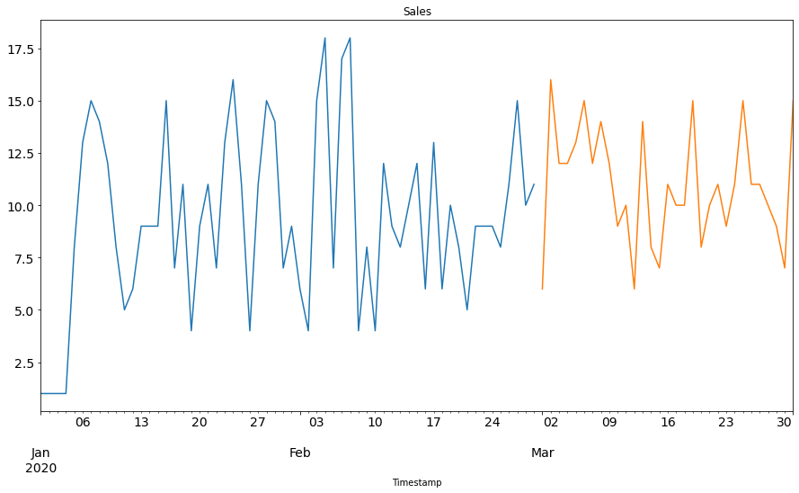
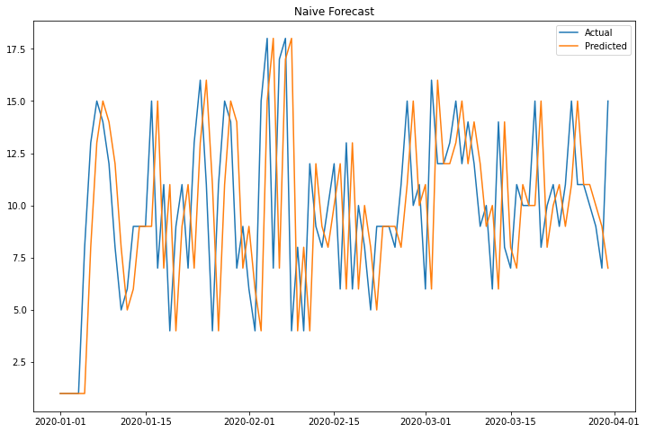
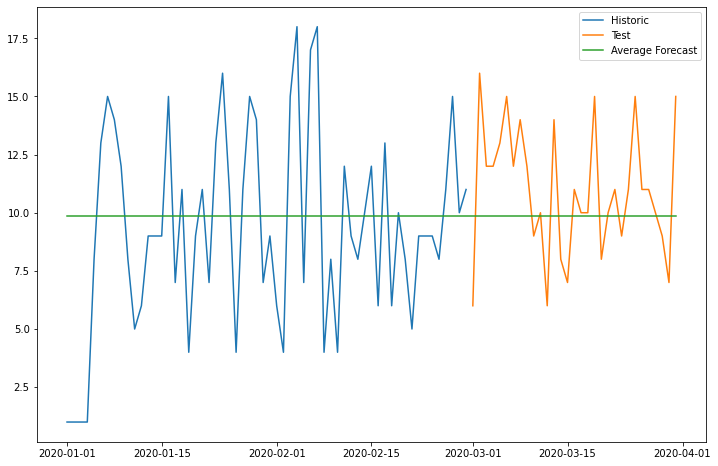
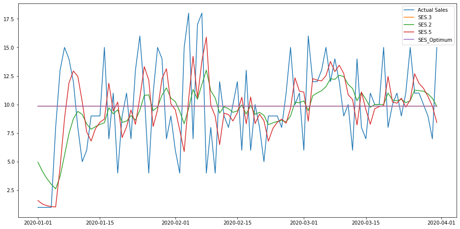
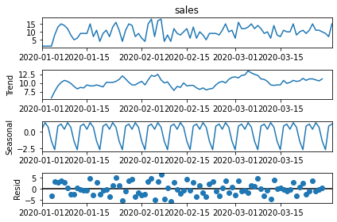
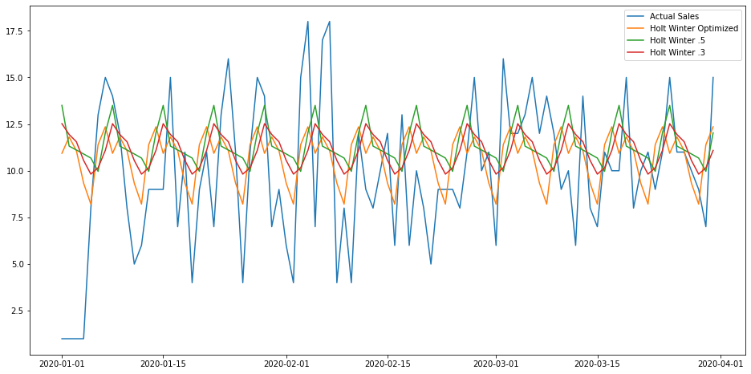

Retail Sales Analysis Jupyter Notebook
Retail Sales Analysis Jupyter Notebook¶
#All Models in this program test the validity of the model at predicting actiual values.
# I have not yet added prediction/forecasting functionality. I will do one week's work of prediction at a time.
import pandas as pd
import numpy as np
import matplotlib.pyplot as plt
import statsmodels.api as sm
import operator
from sklearn.metrics import mean_squared_error
from math import sqrt
from statsmodels.tsa.api import ExponentialSmoothing, SimpleExpSmoothing, Holt
/home/jnapolitano/Dropbox/python/Projects/websites/jnapolitano.io/test/lib/python3.8/site-packages/statsmodels/compat/pandas.py:65: FutureWarning: pandas.Int64Index is deprecated and will be removed from pandas in a future version. Use pandas.Index with the appropriate dtype instead.
from pandas import Int64Index as NumericIndex
def mape_vectorized_v2(a, b):
mask = a != 0
return (np.fabs(a - b)/a)[mask].mean()
#Creating the initial Data Frame from the potLog6 csv. Data from 1/1/2020 to 3/31/2020
df = pd.read_csv('/home/jnapolitano/Dropbox/python/Projects/websites/jnapolitano.io/source/projects/project-retail-sales-forecasting/PotLog.csv')
#creating the dictionary to hold the Errors of each method. Will find minimum(best) value at the end
rmseDictionary = {}
mapeDictionary = {}
#Rearanging data into two new data frames aggregated by the sums of days
#historic data contains the months of jan and february
#test data is the month of march
allData = df.copy()
allData['Timestamp'] = pd.to_datetime(allData.date,format='%Y-%m-%d')
allData.index = allData.Timestamp
allData = allData.resample('D').sum()
allData = allData.drop(columns=['hour', 'week'])
historic = df[:720].copy()
historic['Timestamp'] = pd.to_datetime(historic.date,format='%Y-%m-%d')
historic.index = historic.Timestamp
historic = historic.resample('D').sum()
historic = historic.drop(columns=['hour', 'week'])
test = df[720:].copy()
test['Timestamp'] = pd.to_datetime(test.date,format='%Y-%m-%d')
test.index = test.Timestamp
test = test.resample('D').sum()
test = test.drop(columns=['hour', 'week'])
#Plotting the Historic and Test data on the same plane
historic.sales.plot(figsize=(15,8), title= 'Sales', fontsize=14)
test.sales.plot(figsize=(15,8), title= 'Sales', fontsize=14)
plt.show()

dd= np.asarray(allData.sales)
y_hat_avg = allData.copy()
y_hat_avg['naive'] = 0
#print (y_hat_avg['sales'][3])
#print (len(y_hat_avg))
y_hat_avg['naive'][0] = allData.sales[0]
i = 1
for index, row in y_hat_avg.iterrows():
if i < len(y_hat_avg):
y_hat_avg['naive'][i] = allData.sales[i-1]
#print(index)
#sale = row.sales
#print(sale)
i +=1
else:
break
y_hat_avg.head(10)
| sales | naive | |
|---|---|---|
| Timestamp | ||
| 2020-01-01 | 1 | 1 |
| 2020-01-02 | 1 | 1 |
| 2020-01-03 | 1 | 1 |
| 2020-01-04 | 1 | 1 |
| 2020-01-05 | 8 | 1 |
| 2020-01-06 | 13 | 8 |
| 2020-01-07 | 15 | 13 |
| 2020-01-08 | 14 | 15 |
| 2020-01-09 | 12 | 14 |
| 2020-01-10 | 8 | 12 |
# The easy or naive forcasting method. It predicts values according to the value of the previous day
#This needs to be redone. It shuold not be a straight line but rather a scatter plot
#dd= np.asarray(allData.sales)
#y_hat_avg = test.copy()
#y_hat_avg['naive'] = dd[len(dd)-1]
plt.figure(figsize=(12,8))
#plt.plot(historic.index, historic['sales'], label='Historic Sales')
plt.plot(allData.index,allData['sales'], label='Actual')
plt.plot(y_hat_avg.index,y_hat_avg['naive'], label='Predicted')
plt.legend(loc='best')
plt.title("Naive Forecast")
plt.show()
rmse = sqrt(mean_squared_error(allData.sales, y_hat_avg.naive))
rmseDictionary["Naive"] = rmse
print("The RMS for the Naive Method is equal to {}".format(rmse))
mape = mape_vectorized_v2(allData.sales, y_hat_avg.naive)
mapeDictionary['Naive'] = mape
y_hat_avg.head(10)

The RMS for the Naive Method is equal to 4.650416500311948
| sales | naive | |
|---|---|---|
| Timestamp | ||
| 2020-01-01 | 1 | 1 |
| 2020-01-02 | 1 | 1 |
| 2020-01-03 | 1 | 1 |
| 2020-01-04 | 1 | 1 |
| 2020-01-05 | 8 | 1 |
| 2020-01-06 | 13 | 8 |
| 2020-01-07 | 15 | 13 |
| 2020-01-08 | 14 | 15 |
| 2020-01-09 | 12 | 14 |
| 2020-01-10 | 8 | 12 |
#The Simple Average forcasting method forcasts according the overall average of sales
#y_hat_avg = test.copy()
y_hat_avg['avg_forecast'] = allData['sales'].mean()
plt.figure(figsize=(12,8))
plt.plot(historic['sales'], label='Historic')
plt.plot(test['sales'], label='Test')
plt.plot(y_hat_avg['avg_forecast'], label='Average Forecast')
plt.legend(loc='best')
plt.show()
rmse = sqrt(mean_squared_error(allData.sales, y_hat_avg.avg_forecast))
rmseDictionary["Simple Average"] = rmse
print("The RMS for the Simple Average Method is equal to {}\n".format(rmse))
mape = mape_vectorized_v2(allData.sales, y_hat_avg.avg_forecast)
mapeDictionary['Simple_Average'] = mape
y_hat_avg.tail()

The RMS for the Simple Average Method is equal to 3.864665029828413
| sales | naive | avg_forecast | |
|---|---|---|---|
| Timestamp | |||
| 2020-03-27 | 11 | 11 | 9.857143 |
| 2020-03-28 | 10 | 11 | 9.857143 |
| 2020-03-29 | 9 | 10 | 9.857143 |
| 2020-03-30 | 7 | 9 | 9.857143 |
| 2020-03-31 | 15 | 7 | 9.857143 |
#The moving average forcasting method forcasts according the average of a number of units. In this case we use 7 days
#or one week. More testing should be done to discover the best number of days to use for average
#This should also shift by values. Will revisit this
#y_hat_avg = test.copy()
y_hat_avg['moving_avg_forecast'] = allData['sales'].rolling(3).mean()
y_hat_avg['moving_avg_forecast'][0] = allData['sales'][0].copy()
y_hat_avg['moving_avg_forecast'][1] = allData['sales'][1].copy()
y_hat_avg['moving_avg_forecast'][2] = allData['sales'][2].copy()
plt.figure(figsize=(16,8))
#plt.plot(historic['sales'], label='Historic')
#plt.plot(test['sales'], label='Test')
plt.plot(allData['sales'], label='Actual Sales')
plt.plot(y_hat_avg['moving_avg_forecast'], label='Moving Average Forecast')
plt.legend(loc='best')
plt.show()
rmse = sqrt(mean_squared_error(allData.sales, y_hat_avg.moving_avg_forecast))
rmseDictionary["Moving Average"] = rmse
print("The RMSE for the Moving Average Method is equal to {}\n".format(rmse))
mape = mape_vectorized_v2(allData.sales, y_hat_avg.moving_avg_forecast)
mapeDictionary['Moving Average'] = mape
y_hat_avg.head()
/tmp/ipykernel_28448/4124950064.py:7: SettingWithCopyWarning:
A value is trying to be set on a copy of a slice from a DataFrame
See the caveats in the documentation: https://pandas.pydata.org/pandas-docs/stable/user_guide/indexing.html#returning-a-view-versus-a-copy
y_hat_avg['moving_avg_forecast'][0] = allData['sales'][0].copy()
/tmp/ipykernel_28448/4124950064.py:8: SettingWithCopyWarning:
A value is trying to be set on a copy of a slice from a DataFrame
See the caveats in the documentation: https://pandas.pydata.org/pandas-docs/stable/user_guide/indexing.html#returning-a-view-versus-a-copy
y_hat_avg['moving_avg_forecast'][1] = allData['sales'][1].copy()
/tmp/ipykernel_28448/4124950064.py:9: SettingWithCopyWarning:
A value is trying to be set on a copy of a slice from a DataFrame
See the caveats in the documentation: https://pandas.pydata.org/pandas-docs/stable/user_guide/indexing.html#returning-a-view-versus-a-copy
y_hat_avg['moving_avg_forecast'][2] = allData['sales'][2].copy()
The RMSE for the Moving Average Method is equal to 2.850786580399194
| sales | naive | avg_forecast | moving_avg_forecast | |
|---|---|---|---|---|
| Timestamp | ||||
| 2020-01-01 | 1 | 1 | 9.857143 | 1.000000 |
| 2020-01-02 | 1 | 1 | 9.857143 | 1.000000 |
| 2020-01-03 | 1 | 1 | 9.857143 | 1.000000 |
| 2020-01-04 | 1 | 1 | 9.857143 | 1.000000 |
| 2020-01-05 | 8 | 1 | 9.857143 | 3.333333 |
model = SimpleExpSmoothing(np.asarray(allData['sales']))
fit1 = model.fit()
fit2 = model.fit(smoothing_level=0.2)
fit3 = model.fit(smoothing_level=0.5)
fit4 = model.fit(optimized=True)
y_hat_avg['Simple_Exponential_Smoothing_alpha=.3'] = fit1.fittedvalues
y_hat_avg['Simple_Exponential_Smoothing_alpha=.2'] = fit2.fittedvalues
y_hat_avg['Simple_Exponential_Smoothing_alpha=.5'] = fit3.fittedvalues
y_hat_avg['Simple_Exponential_Smoothing_alpha_Optimum'] = fit4.fittedvalues
y_hat_avg.head()
#print(fit1.fittedvalues)
| sales | naive | avg_forecast | moving_avg_forecast | Simple_Exponential_Smoothing_alpha=.3 | Simple_Exponential_Smoothing_alpha=.2 | Simple_Exponential_Smoothing_alpha=.5 | Simple_Exponential_Smoothing_alpha_Optimum | |
|---|---|---|---|---|---|---|---|---|
| Timestamp | ||||||||
| 2020-01-01 | 1 | 1 | 9.857143 | 1.000000 | 9.857143 | 4.959090 | 1.599929 | 9.857143 |
| 2020-01-02 | 1 | 1 | 9.857143 | 1.000000 | 9.857143 | 4.167272 | 1.299964 | 9.857143 |
| 2020-01-03 | 1 | 1 | 9.857143 | 1.000000 | 9.857143 | 3.533817 | 1.149982 | 9.857143 |
| 2020-01-04 | 1 | 1 | 9.857143 | 1.000000 | 9.857143 | 3.027054 | 1.074991 | 9.857143 |
| 2020-01-05 | 8 | 1 | 9.857143 | 3.333333 | 9.857142 | 2.621643 | 1.037496 | 9.857142 |
#The Exponential Smoothing Forcasting I know that i've implemented it correctly, but i do not understand how it works
# in python. Need to study
#y_hat_avg = test.copy()
#y_hat_avg['SES'] = fit2.forecast(len(test))
plt.figure(figsize=(16,8))
plt.plot(allData['sales'], label='Actual Sales')
#plt.plot(test['sales'], label='Test')
plt.plot(y_hat_avg['Simple_Exponential_Smoothing_alpha=.3'], label='SES.3')
plt.plot(y_hat_avg['Simple_Exponential_Smoothing_alpha=.2'], label='SES.2')
plt.plot(y_hat_avg['Simple_Exponential_Smoothing_alpha=.5'], label='SES.5')
plt.plot(y_hat_avg['Simple_Exponential_Smoothing_alpha_Optimum'], label='SES_Optimum')
plt.legend(loc='best')
plt.show()
rmse = sqrt(mean_squared_error(allData.sales, y_hat_avg['Simple_Exponential_Smoothing_alpha=.3']))
rmseDictionary["Exponential_Smoothing.3"] = rmse
rmse = sqrt(mean_squared_error(allData.sales, y_hat_avg['Simple_Exponential_Smoothing_alpha=.2']))
rmseDictionary["Exponential_Smoothing.2"] = rmse
rmse = sqrt(mean_squared_error(allData.sales, y_hat_avg['Simple_Exponential_Smoothing_alpha=.5']))
rmseDictionary["Exponential_Smoothing.5"] = rmse
rmse = sqrt(mean_squared_error(allData.sales, y_hat_avg['Simple_Exponential_Smoothing_alpha_Optimum']))
rmseDictionary["Exponential_Smoothing_Optimum"] = rmse
mape = mape_vectorized_v2(allData.sales, y_hat_avg['Simple_Exponential_Smoothing_alpha=.3'])
mapeDictionary['Simple_Exponential_Smoothing.3'] = mape
mape = mape_vectorized_v2(allData.sales, y_hat_avg['Simple_Exponential_Smoothing_alpha=.2'])
mapeDictionary['Simple_Exponential_Smoothing.2'] = mape
mape = mape_vectorized_v2(allData.sales, y_hat_avg['Simple_Exponential_Smoothing_alpha=.5'])
mapeDictionary['Simple_Exponential_Smoothing.5'] = mape
mape = mape_vectorized_v2(allData.sales, y_hat_avg['Simple_Exponential_Smoothing_alpha_Optimum'])
mapeDictionary['Simple_Exponential_Smoothing_Optimum'] = mape
#y_hat_avg.head()

#Tests Data for trends, seasonality, etc to preprocess for Holt Winter
sm.tsa.seasonal_decompose(allData.sales).plot()
result = sm.tsa.stattools.adfuller(allData.sales)
plt.show()

#The Holt Winter method forcasts according to trend, season, and means. The data under consideration does not have a
#trend.
#y_hat_avg = test.copy()
model = ExponentialSmoothing(np.asarray(allData['sales']) ,seasonal_periods=7 ,trend=None, seasonal='add')
fit1 = model.fit(optimized = True)
fit2 = model.fit(smoothing_level=.5, smoothing_slope=None, smoothing_seasonal=.5)
fit3 = model.fit(smoothing_level=.3, smoothing_slope=None, smoothing_seasonal=.3)
y_hat_avg['Holt_Winter_Optimum'] = fit1.forecast(len(allData))
y_hat_avg['Holt_Winter_.5'] = fit2.forecast(len(allData))
y_hat_avg['Holt_Winter_.3'] = fit3.forecast(len(allData))
#y_hat_avg['Holt_Winter'] = fit1.forecast(len(test))
plt.figure(figsize=(16,8))
plt.plot(allData['sales'], label='Actual Sales')
plt.plot(y_hat_avg['Holt_Winter_Optimum'], label='Holt Winter Optimized')
plt.plot(y_hat_avg['Holt_Winter_.5'], label='Holt Winter .5')
plt.plot(y_hat_avg['Holt_Winter_.3'], label='Holt Winter .3')
#plt.plot( historic['sales'], label='Historic')
#plt.plot(test['sales'], label='Test')
#plt.plot(y_hat_avg['Holt_Winter'], label='Holt_Winter')
plt.legend(loc='best')
plt.show()
rmse = sqrt(mean_squared_error(allData.sales, y_hat_avg['Holt_Winter_Optimum']))
rmseDictionary["Holt_Winter_Optimum"] = rmse
rmse = sqrt(mean_squared_error(allData.sales, y_hat_avg['Holt_Winter_.5']))
rmseDictionary["Holt_Winter_.5"] = rmse
rmse = sqrt(mean_squared_error(allData.sales, y_hat_avg['Holt_Winter_.3']))
rmseDictionary["Holt_Winter_.3"] = rmse
#rmse = sqrt(mean_squared_error(test.sales, y_hat_avg.Holt_Winter))
#rmseDictionary["Holt Winter"] = rmse
#print("The RMSE for the Holt Winter Model is equal to {}\n".format(rmse))
mape = mape_vectorized_v2(allData.sales, y_hat_avg.Holt_Winter_Optimum)
mapeDictionary['Holt_Winter_Optimum'] = mape
mape = mape_vectorized_v2(allData.sales, y_hat_avg['Holt_Winter_.5'])
mapeDictionary['Holt_Winter_.5'] = mape
mape = mape_vectorized_v2(allData.sales, y_hat_avg['Holt_Winter_.3'])
mapeDictionary['Holt_Winter_.3'] = mape
y_hat_avg.head()

| sales | naive | avg_forecast | moving_avg_forecast | Simple_Exponential_Smoothing_alpha=.3 | Simple_Exponential_Smoothing_alpha=.2 | Simple_Exponential_Smoothing_alpha=.5 | Simple_Exponential_Smoothing_alpha_Optimum | Holt_Winter_Optimum | Holt_Winter_.5 | Holt_Winter_.3 | |
|---|---|---|---|---|---|---|---|---|---|---|---|
| Timestamp | |||||||||||
| 2020-01-01 | 1 | 1 | 9.857143 | 1.000000 | 9.857143 | 4.959090 | 1.599929 | 9.857143 | 10.932666 | 13.501084 | 12.522079 |
| 2020-01-02 | 1 | 1 | 9.857143 | 1.000000 | 9.857143 | 4.167272 | 1.299964 | 9.857143 | 11.810095 | 11.318897 | 11.941726 |
| 2020-01-03 | 1 | 1 | 9.857143 | 1.000000 | 9.857143 | 3.533817 | 1.149982 | 9.857143 | 11.073389 | 11.110567 | 11.554229 |
| 2020-01-04 | 1 | 1 | 9.857143 | 1.000000 | 9.857143 | 3.027054 | 1.074991 | 9.857143 | 9.335734 | 10.898330 | 10.552254 |
| 2020-01-05 | 8 | 1 | 9.857143 | 3.333333 | 9.857142 | 2.621643 | 1.037496 | 9.857142 | 8.212906 | 10.680159 | 9.817994 |
#the Sarina Model is another seasonal model. I don't know how it works exactly. I need to review the math and the
#documentation. I am getting a convergence error. Will fix immediatly
y_hat_avg = test.copy()
fit1 = sm.tsa.statespace.SARIMAX(historic.sales, order=(2, 1, 4),seasonal_order=(0,1,1,7)).fit()
y_hat_avg['SARIMA'] = fit1.forecast(len(test.sales), dynamic=True)
plt.figure(figsize=(16,8))
plt.plot( historic['sales'], label='Historic')
plt.plot(test['sales'], label='Test')
plt.plot(y_hat_avg['SARIMA'], label='SARIMA')
plt.legend(loc='best')
plt.show()
rmse = sqrt(mean_squared_error(test.sales, y_hat_avg.SARIMA))
rmseDictionary["SARIMA"] = rmse
mape = mape_vectorized_v2(test.sales, y_hat_avg['SARIMA'])
mapeDictionary['SARIMA'] = mape
#print("The RMSE for the SARIMA Model is equal to {}\n".format(rmse))
This problem is unconstrained.
RUNNING THE L-BFGS-B CODE
* * *
Machine precision = 2.220D-16
N = 8 M = 10
At X0 0 variables are exactly at the bounds
At iterate 0 f= 2.66232D+00 |proj g|= 6.54170D-02
At iterate 5 f= 2.58627D+00 |proj g|= 2.26162D-02
At iterate 10 f= 2.57546D+00 |proj g|= 7.34123D-03
At iterate 15 f= 2.56850D+00 |proj g|= 4.46988D-02
At iterate 20 f= 2.56359D+00 |proj g|= 5.62649D-03
At iterate 25 f= 2.56039D+00 |proj g|= 6.67412D-02
At iterate 30 f= 2.55761D+00 |proj g|= 3.08187D-03
At iterate 35 f= 2.55698D+00 |proj g|= 1.34257D-02
At iterate 40 f= 2.55574D+00 |proj g|= 9.72859D-03
At iterate 45 f= 2.55562D+00 |proj g|= 2.75953D-03
At iterate 50 f= 2.55559D+00 |proj g|= 1.56106D-03
* * *
Tit = total number of iterations
Tnf = total number of function evaluations
Tnint = total number of segments explored during Cauchy searches
Skip = number of BFGS updates skipped
Nact = number of active bounds at final generalized Cauchy point
Projg = norm of the final projected gradient
F = final function value
* * *
N Tit Tnf Tnint Skip Nact Projg F
8 50 61 1 0 0 1.561D-03 2.556D+00
F = 2.5555930249702210
STOP: TOTAL NO. of ITERATIONS REACHED LIMIT
/home/jnapolitano/Dropbox/python/Projects/websites/jnapolitano.io/test/lib/python3.8/site-packages/statsmodels/base/model.py:604: ConvergenceWarning: Maximum Likelihood optimization failed to converge. Check mle_retvals
warnings.warn("Maximum Likelihood optimization failed to "
print(rmseDictionary)
mn = min(rmseDictionary.items(), key=operator.itemgetter(1))[0]
print("The Best Model is {}".format(mn))
{'Naive': 4.650416500311948, 'Simple Average': 3.864665029828413, 'Moving Average': 2.850786580399194, 'Exponential_Smoothing.3': 3.864665058622391, 'Exponential_Smoothing.2': 3.8907287216857633, 'Exponential_Smoothing.5': 4.038706174884183, 'Exponential_Smoothing_Optimum': 3.864665058622391, 'Holt_Winter_Optimum': 3.7255251931824076, 'Holt_Winter_.5': 4.193341923450785, 'Holt_Winter_.3': 4.007981277418963, 'SARIMA': 3.056354714728084}
The Best Model is Moving Average
print (mapeDictionary)
mn = min(mapeDictionary.items(), key=operator.itemgetter(1))[0]
print("The Best Model is {}".format(mn))
{'Naive': 0.4248514297237633, 'Simple_Average': 0.7014871459995663, 'Moving Average': 0.2589423226705062, 'Simple_Exponential_Smoothing.3': 0.7014871310910847, 'Simple_Exponential_Smoothing.2': 0.4765668392710252, 'Simple_Exponential_Smoothing.5': 0.39056704728123787, 'Simple_Exponential_Smoothing_Optimum': 0.7014871310910847, 'Holt_Winter_Optimum': 0.7394861676289067, 'Holt_Winter_.5': 0.840375675006429, 'Holt_Winter_.3': 0.8120170834920649, 'SARIMA': 0.26343012680844485}
The Best Model is Moving Average